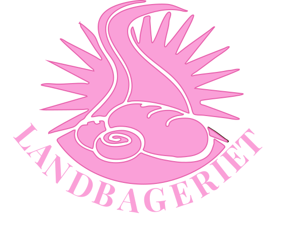

GRUNDLÆGGENDE INDHOLD
Vores første og eneste gruppeopgave på første semester. Vi begyndte temaet med at lave en film ”et vintereventyr” to og to. Vi lavede en brainstorm, og tegnede et storyboard før vi begyndte at filme. Det var en spændende proces, hvor vi både filmede, klippede og redigerede farverne på materialet.
Efterfølgende begyndte det rigtige projekt; Redesign. Vores gruppe fandt hurtigt et hyggeligt bageri, som vi fik lavede en aftale med. Vi lavede moodboards, styletiles og prototype, ud fra både deres værdier og det eksisterende website. Efterfølgende besøgte vi bageriet, hvor vi både fik taget en masse billeder og lavet et interview med ejeren. Billederne fik vi redigeret og lavet om til webp. Vores interview brugte vi til at skrive en ny hyggelig tekst til sitet.
Da vores prototype var færdig, begyndte vi at kode mobilsitet først og derefter til desktop. Under kodningen havde vi delt siderne op imellem os, ved at lave hver vores branch ud fra hovedfilen ”main”. Når vi så mødtes på skolen, kunne vi merge de forskellige dele sammen til et samlet site. Temaet blev afsluttet, ved at vi alle havde forberedt en fremlæggelse om sitet, som blev præsenteret foran både andre elever og vores undervisere.
LINKS
Website:
https://fionaheyns1.github.io/jordens-opsplittelse/index.htmlRepository:
https://github.com/FionaHeyns1/jordens-opsplittelse.gitFigma:
https://www.figma.com/board/d0npwe8HJ2mPDiz1fcHRho/Jordens-opsplittelse?node-id=1-605&t=37PQLOLOAjdAPAl1-1